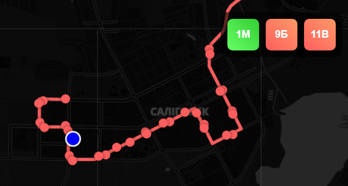

Последние проекты
Скачать ТикТок & YouTube

Этот бот позволяет скачивать аудио и видео с популярных платформ, включая YouTube, TikTok и Instagram. Просто отправьте ссылку на нужный медиафайл, и бот быстро обработает ваш запрос. Также доступна удобная статистика, которая показывает количество загрузок для каждой платформы и общую активность пользователя. Идеально подходит для создания контента, работы с социальными сетями и других проектов, требующих быстрого и простого получения медиафайлов.
Сервер с ботом может не работать - файлы проекта: GitHub
Динамическая карта автобусов
Опытный прототип динамической карты автобусов города Солигорск в Беларуси. Карта отображает остановки и маршруты автобусов, где каждый маршрут различается цветами. При клике на остановку появляется её название. Также предусмотрена функция определения местоположения пользователя, чтобы он мог узнать, где он находится. Линии маршрутов и остановки отрисованы с помощью координат Карта интегрированна в Telegram бота как mini-app